Full name: Microsoft.FSharp.Collections.list<_>
Technical Wiki der Step Ahead
Introduction
Product-Management
Agenda
Why we need a technical Wiki?
software and knowledge are our assets & value
→ persist & spread knowledge
- collaboratively building documentation
- creating and maintaining knowledge bases
- gathering tacit knowledge
- ...
It is your responsibility as a professional developer
to properly document software
that is intended for use by others.
Contribution & Permissions
-
public Wiki
90-9-1 -
enterprise Wiki
contribution level is much higher based on the fact that people are contributing as part of the daily course of their work
→ everybody full control
Wiki platforms
-
specific Wiki systems
(DokuWiki, MediaWiki, ..) -
collaboration management
(Confluence, SharePoint) -
Lightweight Git/Markdown-based Wikis
(github, BitBucket, VSTS, docs.microsoft.com, ..)
Why technicians like Git-based Wikis
- It's handy, it's fast, it's flexible
-
All Benefits from a DVCS
- Collaboration
- Online & Offline-Editing
- Branching
- Diffing
-
Versioned as a whole
-
Figure out what the status of an exported manual
to a given point in time was
-
Figure out what the status of an exported manual
-
Versioning in a context
-
Commit wraps
- All belonging changes
- Commit message
- Relocating content together with adjusted references
-
Commit wraps
-
Markup-Language
- Frees from presentation
- All pages have the same look & feel
-
Artifact dividing
- text, images, ..
-
Export-Options
- Pandoc
- External documents (UM, IG, ..)
-
Flexibilty regarding hoster
- No vendor lockin
- It' s fun, it's modern
Why we use Markdown
- It's fast to write
-
Markdown can be a useful tool for producing clean & professional looking
- research papers
- memos
- email messages
- blog posts
- without the hassle of remembering lots of HTML tags
http://www.makeuseof.com/tag/learning-markdown-write-web-faster/
→ btw: this presentation as well (Git/Markdown/FsReveal)
Headers
1: 2: 3: 4: 5: 6: |
|
H1
H2
H3
H4
H5
H6
Alternatively, for H1 and H2, an underline-ish style:
1: 2: 3: 4: 5: |
|
Alt-H1
Alt-H2
Emphasis
1: 2: |
|
Emphasis, aka italics, with asterisks or underscores.
Strong emphasis, aka bold, with asterisks or underscores.
Lists
1: 2: 3: 4: 5: 6: |
|
- First ordered list item
-
Another item
- Unordered sub-list.
-
Actual numbers don't matter, just that it's a number
- Ordered sub-list
- And another item.
btw: Markdown takes care, regarding numbering
→ use 1. only
References & Links
-
URL-Reference
[text for the link](http-address) -
Link to another page
[text for the link](<filename with ext>) -
Images

tip: skip the alternate text
Source Code
incl. Syntax-Highlighting
1: 2: 3: 4: |
|
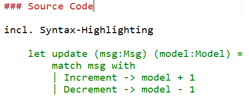
Structure of the Wiki
- 000 - Generic IT topics
- 200 - Guidelines
- 300 - Documentation
- 400 - Specifications
- 500 - Steps specific knowledge
- 700 - Databases
- 800 - Coding
- 900 - Tools
Generic IT topics (000)
-
IT systems of Step Ahead
- Steps
- Team Foundation Server
- CORP.IT-Infos für neue Mitarbeiter in CORP.Produkt
- Testsysteme der Produktentwicklung
-
External services
- Office 365
- Visual Studio Team Services
Guidelines (200)
- 201, 210-219 Organisation
- 202, 220-229 IT-Fundamentals
- 203, 230-239 Standard Tools
- ...
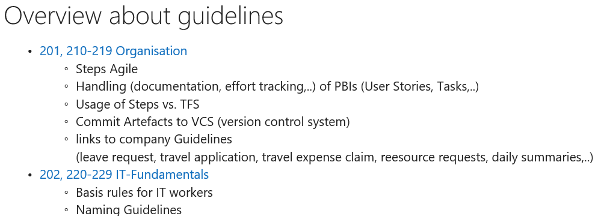
Organisational Guidelines & Instructions
201.OrganisationalGuidelines.md
- HR-related Guidlines
-
Activity Management, Tracking & Controlling
- Steps Agile
- Committing Code
Activity Management, Tracking & Controlling
211.OG.StepsAgile.md
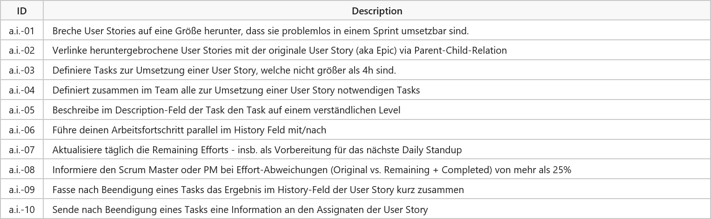
Documentation (300)
-
Essential documents for projects
SMM, BM, SysMM, IG, UM - Tips and tricks for Markdown and Pygments
- Writing good Installation Guidelines
- Templates
SMM - Software Maintenance Manual
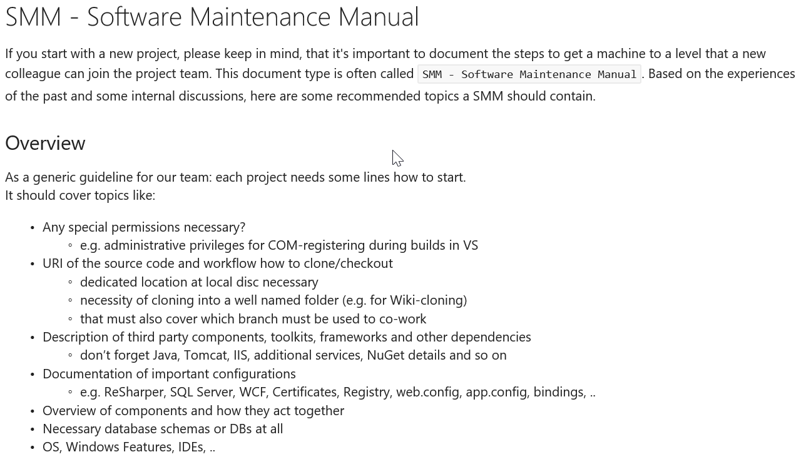
Specification (400)
400.Specification.Overview.md
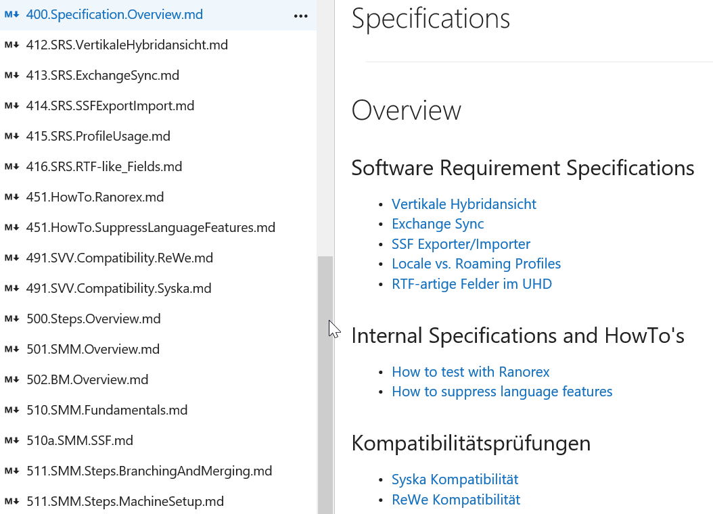
Steps specific knowledge (500)
500.Steps.Overview.md
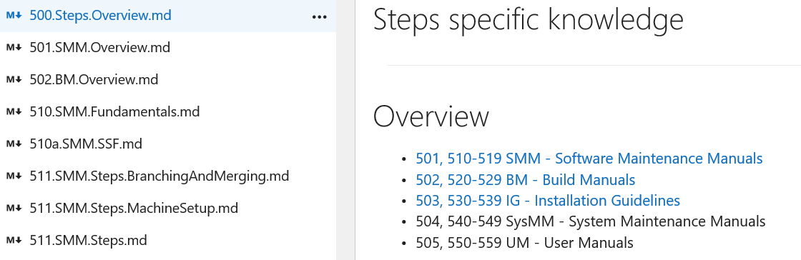
Tools and Applications (900)
900.Tools.Overview.md
- How to setup a new machine
- XCopy-deployable Applications
- Git
Setup new machine
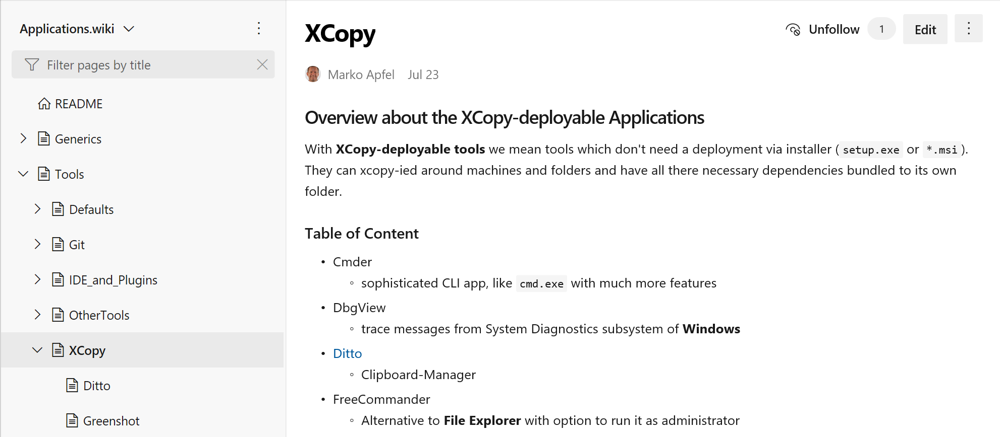
Contribution
-
online
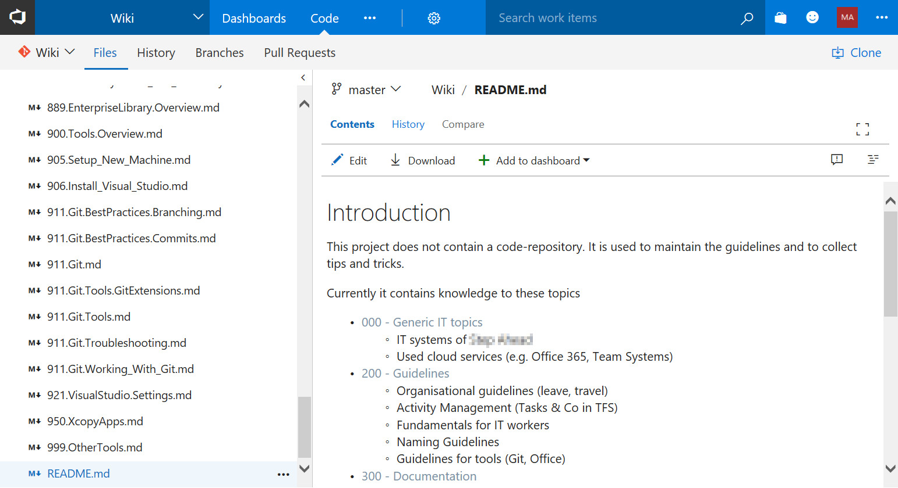 -
offline
git clone https://sa-devolution.visualstudio.com/_git/Wiki/
Start Editing
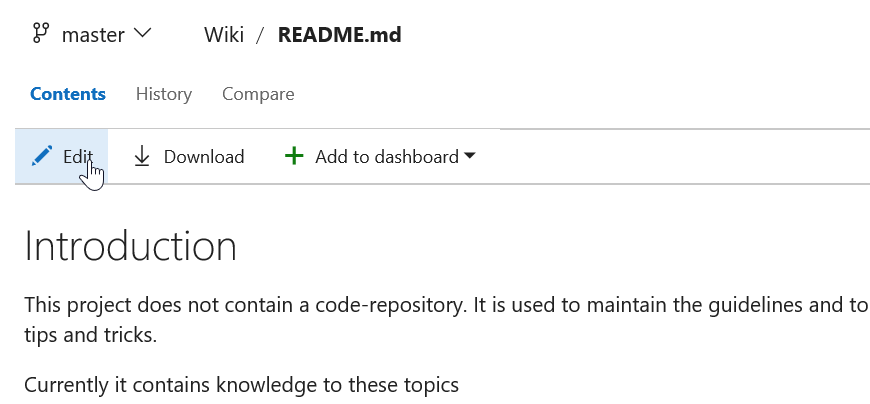
Take care of the commit message
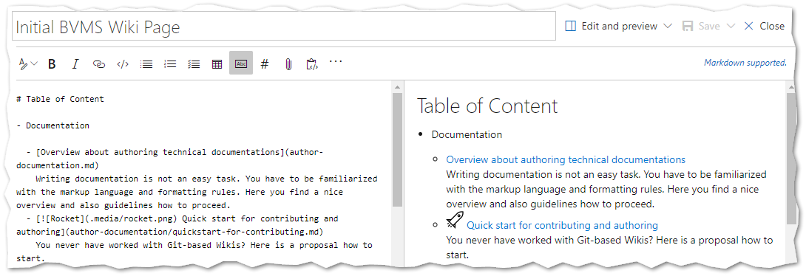
Commit Messages
use ... for trivial changes
History
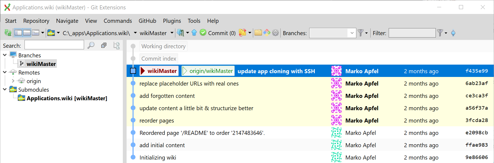
Diffing
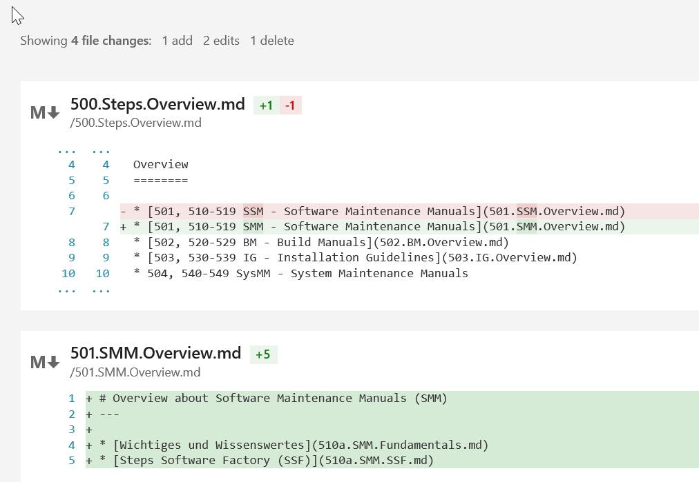
toggle between edit and preview
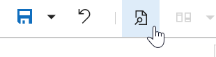
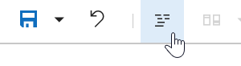
FAQ
-
EN vs. DE?
-
Code: EN, Wiki: EN or DE
The more technical the more English
-
- Can I break something? → No!!!
Perspective
-
Content, content, content
- Software Maintenance Manuals
- Build Manuals
- Architectural knowledge, diagrams
-
Workshops
- Git-Basics
- offline editing
- Exporting content
Links